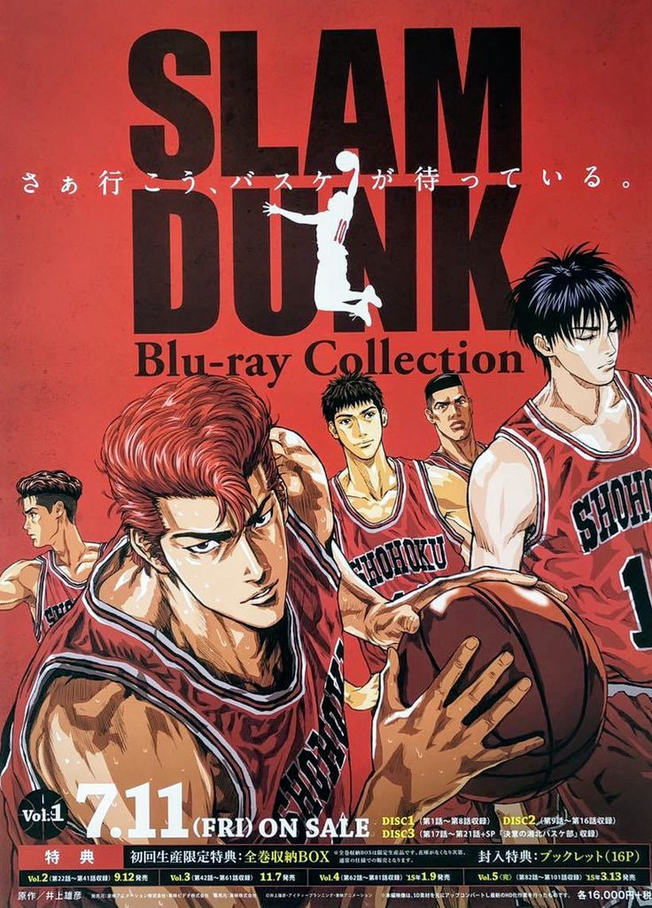

Slam Dunk Slam Dunk (stylized as SLAM DUNK) is a Japanese sports manga series written and illustrated by Takehiko Inoue. It was serialized in Shueisha's shōnen manga magazine Weekly Shōnen Jump from October 1990 to June 1996, with the chapters collected into 31 tankōbon volumes. It tells the story of a basketball team from Shōhoku High School in the Shōnan area of Japan.
Hanamichi Sakuragi is a delinquent and the leader of a gang. Sakuragi is very unpopular with girls, having been rejected an astonishing fifty times. In his first year at Shohoku High School, he meets Haruko Akagi, the girl of his dreams, and is overjoyed when she is not repulsed or scared of him like all the other girls he has asked out. Haruko, recognizing Sakuragi's athleticism, introduces him to the Shohoku basketball team.
Sakuragi is reluctant to join the team at first, as he has no prior experience in sports and thinks that basketball is a game for losers because his fiftieth rejection was in favor of a basketball player. Despite his extreme immaturity and fiery temper, he proves to be a natural athlete and joins the team, mainly in the hopes of impressing and getting closer to Haruko.
Later on, Sakuragi realizes that he has come to actually love the sport, despite having previously played primarily because of his crush on Haruko. Kaede Rukawa—Sakuragi's bitter rival (both in basketball and because Haruko has a massive crush, albeit one-sided, on Rukawa), the star rookie and a "girl magnet"—joins the team at the same time.
Takenori Akagi is the captain of the Shohoku basketball team. Furthermore, he is the brother of Haruko Akagi. Because of having an average player on his team, he was doing everything alone. But In his 3rd year, Hanamichi Sakuragi joins the team. Though, Hanamichi was a beginner his ability to jump high provided an advantage for the team. The scholarship provided to him was also stopped as he lost to Aiwa. As a result, he has to give normal exams. More Info...
Ryota Miyagi is one of Sakuragi’s close friends. Due to some misunderstanding, they have a conflict with each other. The conflict happened because Ryoto thought Ayako was dating him. Both of them are unlucky in love. Like Sakuragi was rejected by 50 girls, Ryota also gets rejected by 10 girls. More Info...